// Il Paper Che Fa Comodo
Sezione 00. PremessaUn politico europeo cita uno studio di Nature e dichiara che l'algoritmo di X "orienta progressivamente le opinioni politiche" verso posizioni conservatrici. Dice "chiaramente". Dice che serve il DSA. Dice che arretrare sulla regolamentazione e' un'erosione della democrazia.
Lo studio esiste davvero. Si chiama "The political effects of X's feed algorithm" (Gauthier, Hodler, Widmer, Zhuravskaya), pubblicato su Nature il 18 febbraio 2026, DOI: 10.1038/s41586-026-10098-2. E' peer-reviewed, e' su Nature, ha i numeri e le tabelle al posto giusto.
Noi pero' facciamo quella cosa che rompe le scatole a tutti: scarichiamo i dati, apriamo il codice, e controlliamo se i numeri dicono quello che il titolo promette.
Spoiler: non lo dicono neanche un po'.
Disclaimer. Questo non e' un articolo di opinione. Abbiamo scaricato il dataset di replicazione da Figshare (10.6084/m9.figshare.28033772), letto il codice sorgente dell'algoritmo di X (github.com/xai-org/x-algorithm), e generato 20 grafici dai dati originali dello studio. Tutto replicabile. Nessun dato inventato.
// Due Articoli Fa Lo Sapevamo Gia'
Sezione 01. Il contestoSe segui questo blog, questa storia la conosci. In L'Attenzione Invisibile abbiamo smontato il codice sorgente di Phoenix, il motore di raccomandazione di X. Sette segnali nascosti, il dwellTimeMs, il peso negativo su isOpenLinked, la variabile latente che stima la tua attenzione prima che tu faccia qualsiasi cosa. In Il Feed Non E' Tuo siamo passati dalla teoria alla pratica: 1.600 tweet catturati, 71 grafici, e la dimostrazione empirica che il 70% del feed "Per Te" arriva da account che non segui.
Sapevamo gia' che l'algoritmo seleziona per engagement, non per contenuto politico. Sapevamo gia' che il peso su isOpenLinked penalizza i link esterni (cioe' tutto cio' che ti porta fuori dalla piattaforma). Sapevamo gia' che la KL divergence sul sentiment tra feed algoritmico e cronologico era 0.001 bit: nessuna manipolazione emotiva misurabile.
Quindi quando Nature pubblica un paper che dice "l'algoritmo di X sposta le opinioni a destra", la domanda non e' se sia vero. La domanda e': i dati lo supportano?
// 0.11 Deviazioni Standard
Sezione 02. L'effect sizeIl risultato principale dello studio e' uno shift di 0.11 deviazioni standard sulle "conservative policy priorities" (CI 95%: 0.02-0.20, p=0.016). Per chi non vive di paper: e' un effetto piccolo. Cohen's d sotto 0.2 e' "small". Questo sta a 0.11. Il confidence interval parte da 0.02, praticamente zero, e il p-value a 0.016 non e' esattamente il tipo di certezza su cui costruisci una legge europea.
Tutti gli effetti misurati sono sotto la soglia "small". Tutti. Nessuna eccezione.
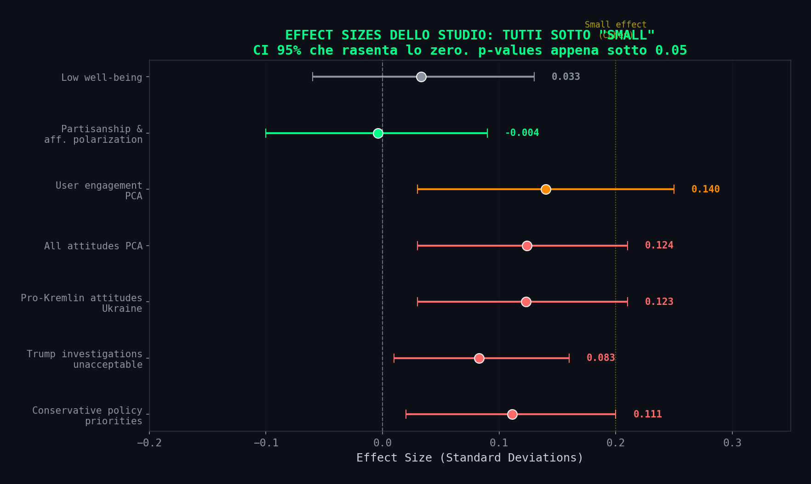
Ok, un effetto piccolo non e' automaticamente irrilevante. Su 500 milioni di utenti, anche 0.11 SD potrebbe contare. Ma un effetto piccolo conta solo se e' solido: se regge quando cambi sottogruppo, se resiste ai controlli, se non e' un artefatto del campione. E qui casca tutto.
Perche' quel 0.11 SD ha tre problemi grossi:
- Non e' robusto per sottogruppo: sui Democratici (46% del campione) l'effetto e' zero. Sparisce. L'intero risultato e' guidato da Repubblicani e Indipendenti gia' orientati.
- La variabile di misura ha alta incertezza: la classificazione politica e' fatta da un LLM con 20% di rumore. Con una variabile chiave cosi' imprecisa, un effetto di 0.11 SD puo' essere interamente attenuazione o amplificazione da errore di misura.
- Il campione e' altamente selezionato: 78% bianchi, 58% laureati, 46% Dem, reclutati via panel retribuito YouGov. Non e' la popolazione di X.
Statisticamente significativo non vuol dire praticamente rilevante, specialmente quando sei sotto la soglia di "small effect". "Chiaramente orienta le opinioni politiche" e' una lettura che i numeri non reggono. Effetto piccolo, non robusto, misurato con uno strumento impreciso su un campione che non rappresenta nessuno. Non ci costruisci sopra una narrativa.
Per confronto. Lo studio Meta del 2023 (Guess et al., Science) ha testato la stessa cosa su Facebook e Instagram con campioni molto piu' grandi. Risultato: "little evidence that the algorithms [had] a meaningful effect on attitudes". Stessa domanda, piattaforma piu' grande, effetto nullo. Ma quel paper non serviva a nessuna narrativa politica, quindi nessuno lo cita.
// Il Breakdown Che Nessuno Cita
Sezione 03. Democratici vs RepubblicaniLo studio ha i dati separati per partito. Extended Data Fig. 4. E qui la narrativa crolla definitivamente.
Per i Democratici, NESSUN effetto e' statisticamente significativo. Zero. Conservative policy priorities: p=0.164. Pro-Kremlin attitudes: p=0.842. All attitudes: p=0.238. L'algoritmo non sposta i democratici di un millimetro.
L'effetto aggregato che tanto fa titolo e' interamente guidato da Repubblicani e Indipendenti. Gente che gia' aveva un orientamento conservatore e che, esposta a contenuti che generano piu' engagement (piu' provocatori, piu' emotivi, piu' retwittabili), ha rafforzato marginalmente le proprie posizioni pre-esistenti.
Questo cambia completamente la natura del fenomeno. Non e' manipolazione, cioe' un sistema che converte opinioni. E' amplificazione comportamentale, cioe' un sistema che rinforza cio' che c'era gia'. La differenza non e' semantica. E' la differenza tra un megafono che ti fa cambiare idea e un megafono che alza il volume della tua voce. L'algoritmo non produce conservatori. Trova persone gia' orientate e le espone a contenuti che confermano la loro visione del mondo, perche' quei contenuti generano piu' click.
E lo fa anche con i liberali, con gli appassionati di sport, con chi guarda meme di gatti. Non discrimina per orientamento politico. Discrimina per engagement. Ma il contenuto conservatore americano nel 2023 (Trump sotto indagine, guerra in Ucraina, campagna elettorale alle porte) era strutturalmente piu' provocatorio e piu' engaging. Se il contenuto liberale avesse generato piu' like, l'algoritmo avrebbe amplificato quello.
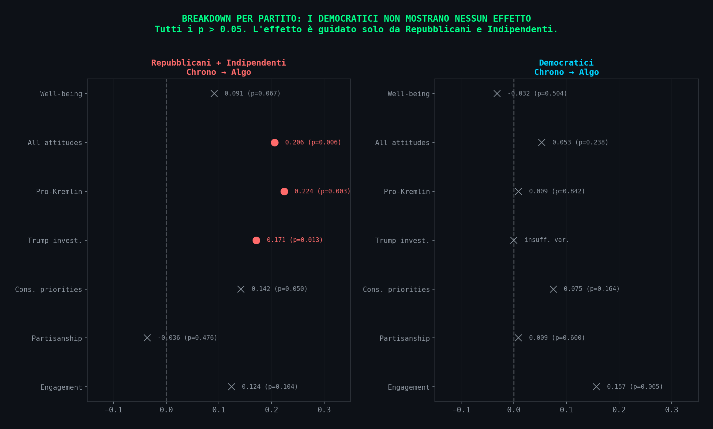
// Il Dato Che Capovolge Tutto
Sezione 04. Chi c'e' davvero nel feedAbbiamo preso i 268.532 post del dataset e contato la proporzione di contenuti per orientamento politico (secondo la classificazione Llama 3 degli autori stessi) in ciascun tipo di feed.
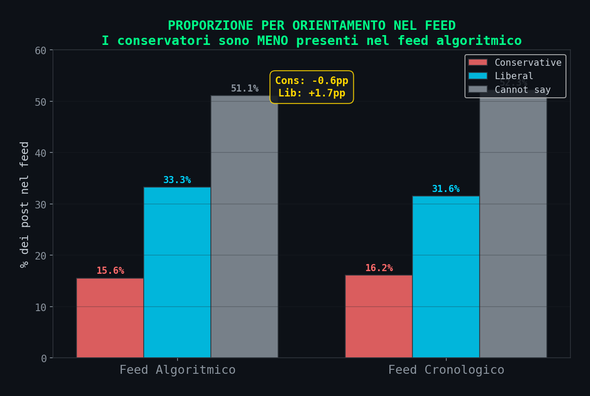
I numeri: nel feed algoritmico i contenuti conservatori sono il 15.6%. Nel cronologico il 16.2%. La differenza e' -0.6 punti percentuali. Non e' statisticamente significativa, e' rumore. Ma il punto non e' che l'algoritmo "favorisce i liberali". Il punto e' che non c'e' nessuna evidenza di sovra-rappresentazione conservatrice. La narrativa "l'algoritmo pompa contenuti di destra" non ha supporto nei dati di composizione del feed.
Qualcuno rispondera': "ok, i conservatori non sono di piu', ma quelli che ci sono fanno piu' engagement, quindi impatto maggiore". Ed e' un punto valido, lo affrontiamo nella sezione successiva. Ma questo sposta il problema dall'algoritmo al contenuto. L'algoritmo non sceglie contenuti conservatori. Sceglie contenuti engaging. Se il contenuto conservatore genera piu' interazioni, la domanda e' perche' e' piu' engaging, non perche' l'algoritmo lo preferisce.
E la componente piu' grande? "Cannot say", il 51.1% nel feed algoritmico. La meta' dei contenuti non e' classificabile politicamente. E' entertainment. Meme. Video di gatti. Clip sportive. Roba che genera engagement senza avere un orientamento politico.
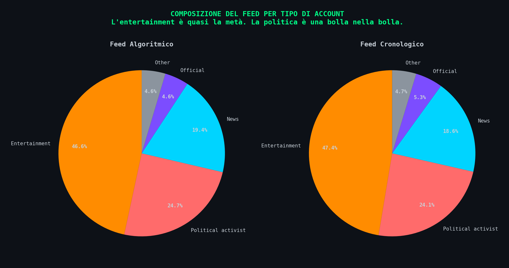
// E' l'Engagement, Non la Politica
Sezione 05. Il driver veroEcco il pezzo che lo studio non ti racconta, forse perche' gli smonta la tesi. Il contenuto conservatore ha intrinsecamente piu' engagement di quello liberale. Non perche' l'algoritmo lo favorisce. Perche' e' piu' provocatorio, piu' emotivo, piu' semplificato, piu' condivisibile. E' content design, non bias algoritmico.
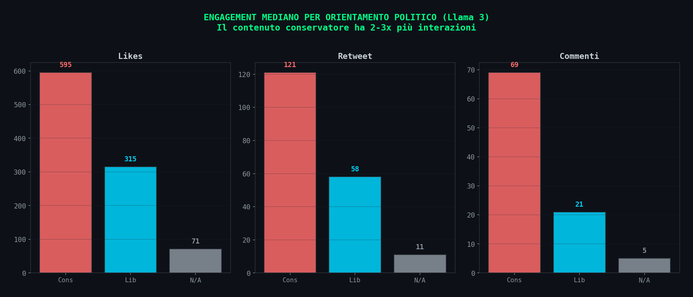
I numeri sono nei loro dati:
| Metrica | Conservatore | Liberale | Ratio |
|---|---|---|---|
| Likes mediani | 595 | 315 | 1.9x |
| Retweet mediani | 121 | 58 | 2.1x |
| Commenti mediani | 69 | 21 | 3.3x |
I conservatori fanno 2-3 volte piu' interazioni. Un algoritmo che ottimizza per engagement amplifica quello che genera engagement. Non ha bisogno di sapere cosa e' "conservatore". Non ha un flag is_conservative nel codice. Ha un contatore di like, e i like parlano da soli.
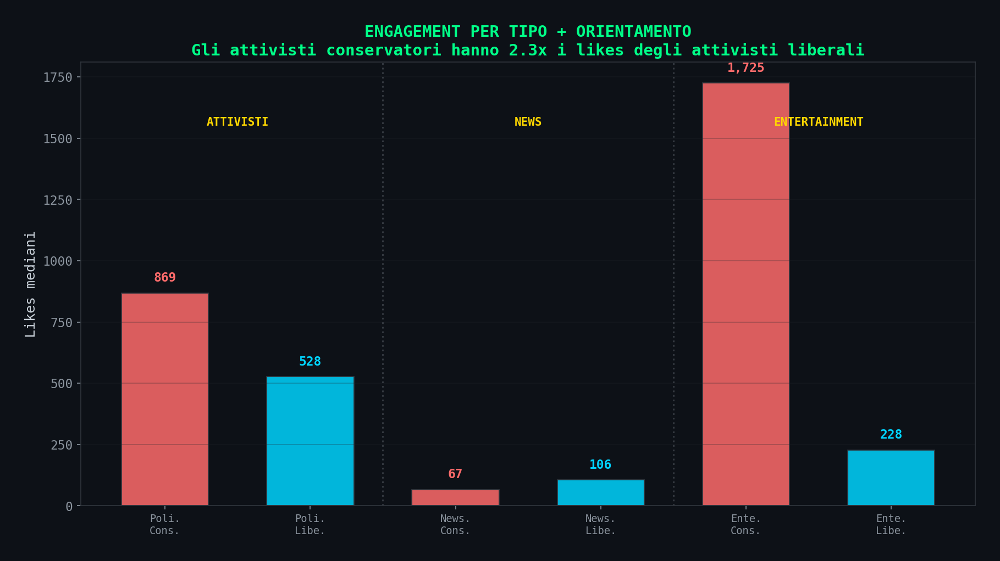
E se guardiamo il confronto algo vs chrono per slant, il quadro e' ancora piu' chiaro: i conservatori nel feed algoritmico hanno mediana likes piu' bassa che nel cronologico (544 vs 644). I liberali vengono amplificati di piu' (+38.6%). L'algoritmo non "pompa conservatori". Pompa engagement, e l'engagement nel feed algoritmico si distribuisce in modo piu' omogeneo.
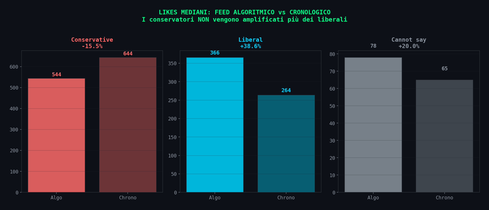
// Le News Non Sono Censurate
Sezione 06. Engagement, non censuraLo studio enfatizza il calo delle news nel feed algoritmico (-15.5 punti percentuali). Leggendo il paper sembra censura politica. Leggendo i dati e' aritmetica.
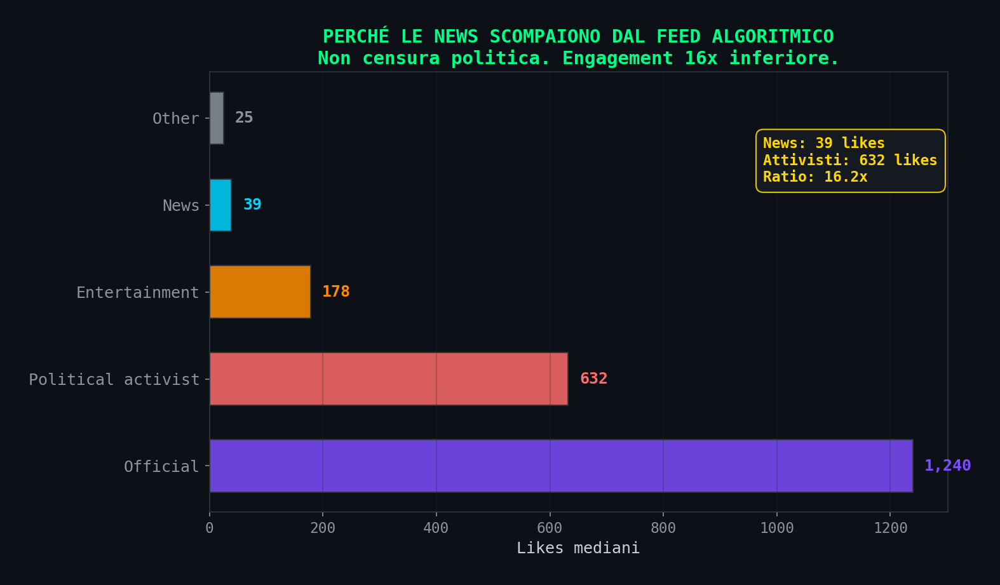
Le testate giornalistiche hanno mediana 39 likes. Gli attivisti politici 632. Gli account ufficiali 1.240. L'entertainment 178. Il ratio news/attivisti e' 1:16. L'algoritmo non sa che sono news e non gli importa. Vede un post con 39 like e lo mette sotto uno da 632. Fine.
Perche' le news hanno engagement cosi' basso? Perche' linkano fuori. E come sappiamo dal codice sorgente di Phoenix, isOpenLinked ha peso negativo. L'algoritmo penalizza i link esterni non perche' odia il giornalismo. Li penalizza perche' ogni click su un link e' un utente che esce dall'app. Ogni utente che esce e' revenue pubblicitaria che vola via.
E' il business model. Non un complotto politico. Non servono i poteri forti, basta un foglio Excel con i ricavi pubblicitari.
// L'Algoritmo E' Pubblico (E Non Ha Bias)
Sezione 07. Il codiceL'algoritmo di X e' open source. Prima versione marzo 2023 (github.com/twitter/the-algorithm). Seconda versione gennaio 2026 con il nuovo motore Grok-based (github.com/xai-org/x-algorithm). Chiunque puo' leggere il codice. Chiunque puo' verificare.
Il README del nuovo repository lo dice esplicitamente:
Final Score = Σ (weighti × P(actioni))
Ma la parte che conta non sono le azioni visibili. Come abbiamo smontato in L'Attenzione Invisibile, Phoenix legge 7 segnali nascosti che tu non vedi da nessuna parte:
| Segnale | Tipo | Cosa misura |
|---|---|---|
dwellTimeMs | continuo (ms) | Quanto tempo stai fermo sul post. Il segnale piu' ricco. |
isDetailExpanded | binario | Hai espanso il thread per leggere le risposte. |
isPhotoExpanded | binario | Hai allargato la foto a schermo intero. |
isVideoPlayback50 | binario | Hai guardato almeno il 50% del video. |
isProfileClicked | binario | Hai visitato il profilo dell'autore. |
isBookmarked | binario | Hai salvato il post. Segnale forte di valore percepito. |
isOpenLinked | binario | Hai cliccato un link esterno. Peso NEGATIVO. |
Questi segnali alimentano il transformer che predice la probabilita' di 15 azioni: P(favorite), P(reply), P(repost), P(quote), P(click), P(profile_click), P(video_view), P(photo_expand), P(share), P(dwell), P(follow_author), e 4 segnali negativi: P(not_interested), P(block), P(mute), P(report). Il punteggio finale e' la somma pesata di queste probabilita'.
Non c'e' nessuna classificazione politica nel codice. Zero. Nessun token "conservative", nessun embedding "liberal", nessun layer che distingue orientamenti. L'algoritmo non sa se un post e' di destra o di sinistra. Sa quanto tempo ci stai sopra, se allarghi la foto, se espandi il thread, se torni indietro a rivederlo. Sa che ti ha tenuto fermo 8 secondi invece di 2. E questo basta.
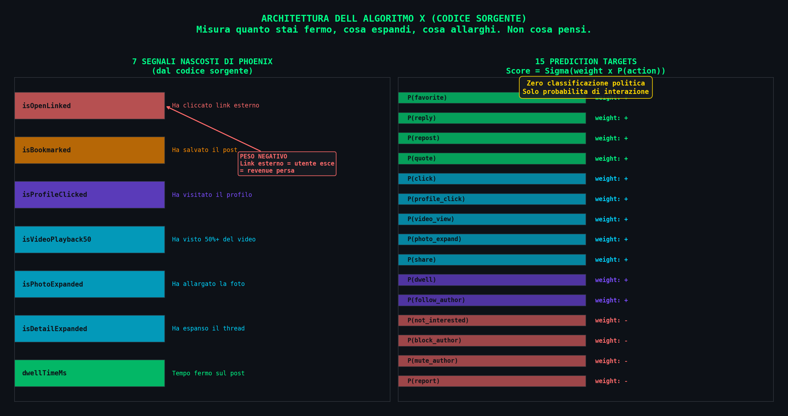
E qui va chiarita una cosa che la stampa tech ha cannato in pieno: quando dicono che "dietro l'algoritmo c'e' Grok", e' marketing. Grok e' il brand. Il modello che serve il feed in tempo reale a centinaia di milioni di utenti non e' un LLM da 300 miliardi di parametri che ragiona su ogni tweet. Sarebbe fisicamente impossibile. Per servire il feed a 500 milioni di utenti ti servono meno di 100ms per request. Un LLM completo non ce la fa neanche col datacenter di Google.
Quello che succede sotto il cofano e' information retrieval classico: i segnali comportamentali (dwell time, espansioni, click) vengono proiettati in uno spazio vettoriale ad alta dimensionalita' tramite embedding. Ogni utente diventa un vettore. Ogni post diventa un vettore. Il ranking e' un calcolo di similarita' tra vettori: approximate nearest neighbor per pescare ~1.500 candidati da 500 milioni di post, poi una rete neurale piu' pesante per riordinare le top-N. E' lo stesso identico pattern di YouTube, TikTok, Instagram, Spotify. Non e' un progetto politico. E' un vincolo di latenza.
Il transformer "Grok-based" di Phoenix condivide l'architettura con Grok (attention heads, positional encoding), ma e' un modello specializzato per ranking, non un chatbot. E' come dire che una Ferrari e un trattore usano entrambi un motore a scoppio. Vero, ma non fanno la stessa cosa.
Il meccanismo in 30 secondi. 500 milioni di post al giorno → candidate generation: ~1.500 candidati (meta' dal grafo dei tuoi follow, meta' da ML discovery via embedding) → Phoenix transformer: predice engagement per ogni candidato usando i tuoi segnali comportamentali → ranking per punteggio → filtri di diversita' e qualita' → il tuo feed. Nessuno di questi step sa cosa e' "conservatore". Tutti sanno cosa ti tiene fermo sullo schermo.
// Le Bolle Le Creiamo Noi
Sezione 08. Il vero meccanismoLo studio stesso spiega il meccanismo che smonta la propria tesi, senza rendersene conto. Citano: "exposure to algorithmically curated content led users to follow conservative activist accounts [...] these accounts remained followed after turning the algorithm off."
Tradotto: l'algoritmo ti mostra post engaging. Tu decidi di seguire chi li ha scritti. Quando torni al feed cronologico, quegli account sono ancora nella tua lista. L'algoritmo ha fatto da motore di scoperta. La scelta di follow l'hai fatta tu.
Questo e' lo stesso meccanismo di qualsiasi sistema di raccomandazione. Spotify ti suggerisce una playlist. Ti piace e la salvi. Quando spegni Discover Weekly, quella musica resta nella tua libreria. Nessuno accusa Spotify di "spostare i gusti musicali a destra".
L'obiettivo dell'algoritmo e' uno solo: tenerti dentro l'app piu' a lungo possibile. Non gli importa se quello che ti tiene dentro e' un thread conservatore, un meme liberale, o un video di un cane che fa skateboard. Gli importa che tu scrolli, che tu interagisca, che tu non chiuda l'app. Le bolle informative le creiamo noi con i nostri follow, i nostri like, i nostri retweet. L'algoritmo si limita a darci di piu' di quello che abbiamo gia' dimostrato di volere.
E' un amplificatore. Non un generatore.
// Llama 3 Come Giudice Politico
Sezione 09. Il classificatoreE qui arriviamo al punto metodologico piu' critico. Come fanno a decidere se un post e' "conservatore" o "liberale"? Abbiamo letto il loro codice (nella cartella llama3_annotations/ del dataset di replicazione). Riga 26:
Llama 3 8B. Otto miliardi di parametri. Il piu' piccolo della famiglia. Quello che giri su un portatile con una GPU decente. Non il 70B. Non il 405B. Non Llama 3.1 o 3.2 con le migliorie successive. La versione base, la piu' economica, in bfloat16.
E il prompt? Prendono 10 tweet a caso dall'account, li incollano in un messaggio, e chiedono "Annotate this account as Conservative, Liberal, or Cannot say". Fine. Nessun few-shot example. Nessun chain-of-thought. Nessuna calibrazione. Greedy decoding (do_sample=False). Un paper su Nature che classifica 268.532 post con un prompt che non passerebbe un code review su un progetto hobby.
Nel dataset di validazione (500 post annotati anche da 4 umani), Llama 3 8B concorda con la media umana nell'80.2% dei casi. Suona bene finche' non guardi i dettagli.
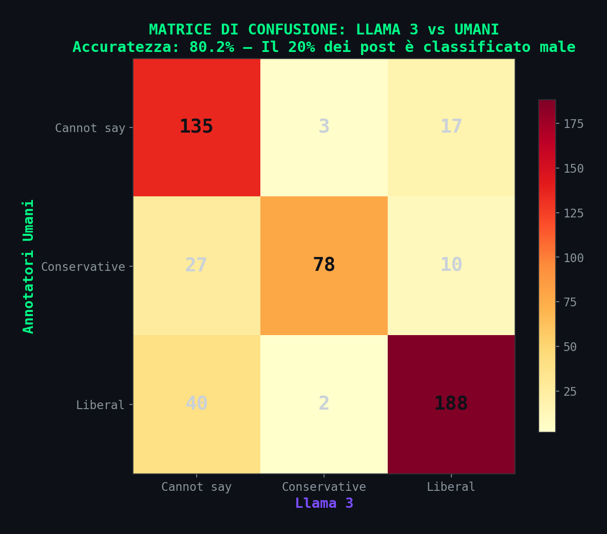
27 post che gli umani classificano come conservatori, Llama 3 li mette in "cannot say". 10 post conservatori secondo gli umani, Llama 3 li classifica liberal. 40 post liberali finiscono in "cannot say". Il 20% delle classificazioni e' sbagliato.
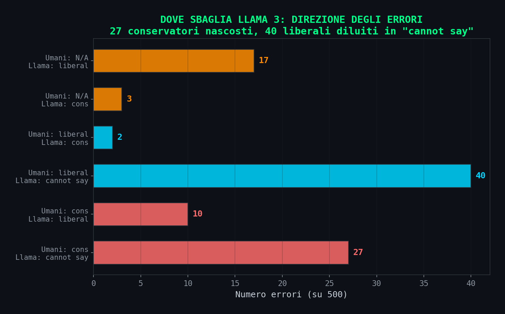
Ma il dato piu' devastante e' questo: gli annotatori umani sono unanimi solo nel 58.8% dei casi. In 4 persone, su 500 post, concordano tutti e 4 meno di 6 volte su 10.
Il classification report dal loro stesso codice di validazione racconta il resto:
| Classe | Precision | Recall | F1 | Supporto |
|---|---|---|---|---|
| Liberal | 0.87 | 0.82 | 0.84 | 230 |
| Cannot Say | 0.67 | 0.87 | 0.76 | 155 |
| Conservative | 0.94 | 0.68 | 0.79 | 115 |
Il recall sui contenuti conservatori e' 0.68: una quota sostanziale (circa il 32%) non viene riconosciuta correttamente e finisce classificata come "Cannot say" o "Liberal". In uno studio che misura se l'algoritmo promuove contenuti conservatori, il classificatore ne manca quasi uno su tre. E la precision su "Cannot say" e' 0.67: circa un terzo dei post etichettati come "non classificabili" in realta' ha un orientamento politico.
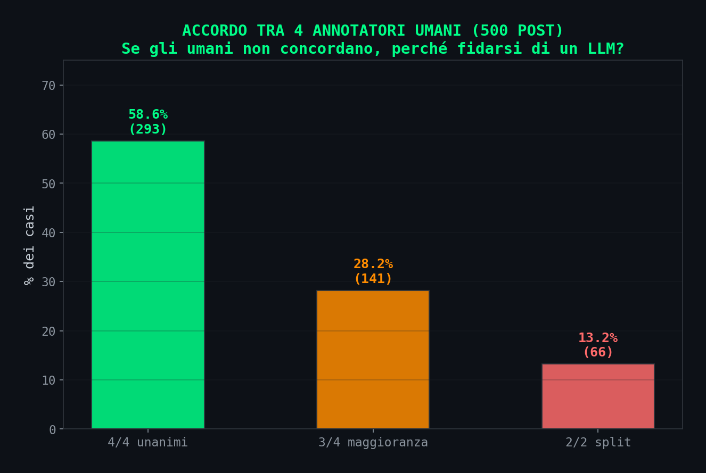
E gli umani? Il Krippendorff's Alpha (la misura standard di accordo inter-annotatore) e' 0.69. Nella letteratura, sotto 0.67 e' inaffidabile, tra 0.67 e 0.80 e' sufficiente per conclusioni "tentative". Siamo appena sopra la soglia del minimamente accettabile. Il singolo annotatore peggiore concorda con la media solo nel 68.7% dei casi.
La variabile "orientamento politico" ha un livello di incertezza e rumore di misura altissimo. E' normale nelle scienze sociali: la classificazione politica e' intrinsecamente ambigua. Ma quando la tua variabile chiave, quella su cui costruisci la conclusione principale, ha questo livello di rumore, un effetto di 0.11 SD puo' essere in parte spiegato o amplificato dall'errore di classificazione. L'intera analisi si regge su 268.532 etichette assegnate da un LLM da 8B parametri con un prompt senza calibrazione, che perde un conservatore su tre.
Il problema della circolarita'. Usano un LLM per decidere cosa e' "conservatore". L'LLM tende a classificare contenuti emotivi, populisti o anti-establishment come conservatori (possibile bias dei modelli di linguaggio addestrati prevalentemente su dati anglofoni). Poi misurano che l'algoritmo di X amplifica contenuti engaging (che sono anche piu' emotivi e provocatori). Poi concludono che X amplifica "contenuti conservatori". Ma il classificatore e il fenomeno condividono lo stesso confondente: l'emotivita' del linguaggio.
Il dato che manca. Il dataset di replicazione non contiene il testo dei post (cancellato per ragioni IRB), non contiene i nomi degli account, e soprattutto non contiene il conteggio follower degli account che hanno scritto i post. Questo e' un buco enorme. Senza i follower non puoi testare la spiegazione piu' ovvia: i post conservatori hanno piu' engagement perche' gli account conservatori hanno piu' follower? Il rapporto engagement/follower (il vero indicatore di viralita') e' impossibile da calcolare. Non puoi separare l'effetto "account grande" dall'effetto "contenuto conservatore". E nessuno puo' replicare le classificazioni, perche' i testi originali non sono disponibili nel dataset di replicazione per ragioni IRB.
// Il Campione Piu' Skewed d'America
Sezione 10. Chi hanno misuratoIl campione dello studio: 4.965 utenti. Reclutati tramite YouGov (un panel online). 78% bianchi. 58% con 4+ anni di universita'. 46% democratici, 21% repubblicani. Eta' media 51 anni.
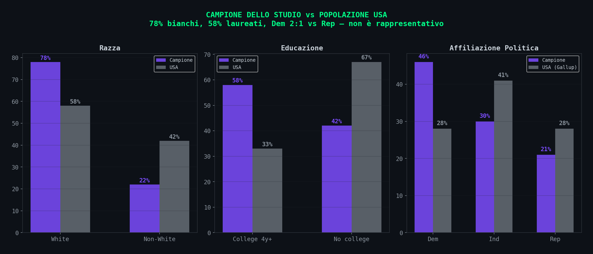
Questo non e' un campione rappresentativo degli utenti di X. Non e' rappresentativo della popolazione USA. E' un campione di utenti istruiti, anziani, prevalentemente bianchi e democratici che hanno accettato di partecipare a un panel retribuito.
Ma il problema del campione e' secondario rispetto al funnel di partecipazione, che e' il vero tallone d'Achille metodologico dello studio.
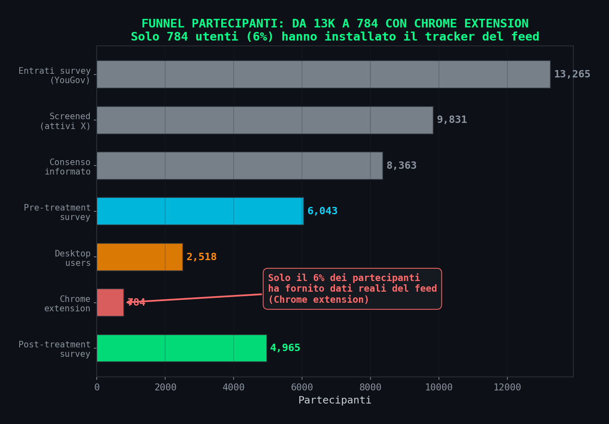
Si parte da 13.265 reclutati via YouGov. 3.434 vengono esclusi perche' non abbastanza attivi su X. Dei 9.831 ammessi, 1.486 rinunciano al consenso. 2.320 abbandonano durante il pre-treatment survey. Restano 6.043. Di questi, solo 2.518 usano il desktop (gli altri usano il telefono, dove non puoi installare l'estensione). E di quei 2.518, solo 784 installano la Chrome extension che traccia cosa appare nel feed.
784 su 13.265 partenze. Il 6%. Questo e' il campione su cui si basano TUTTE le analisi del contenuto del feed, cioe' la parte dello studio che dice "l'algoritmo mostra piu' contenuti conservatori". Il restante 94% dei partecipanti contribuisce solo con le risposte ai sondaggi, senza nessuna verifica di cosa hanno effettivamente visto.
E non e' selection bias casuale. Chi installa volontariamente una Chrome extension per un esperimento accademico e' sistematicamente diverso da chi non lo fa: piu' tech-savvy, piu' interessato alla ricerca, probabilmente con un rapporto diverso con la piattaforma. Non puoi generalizzare da questo sottocampione.
Il punto critico. Su un effetto di 0.11 SD, un selection bias del 94% e un tasso di non-compliance del 14.6% (auto-dichiarato, il dato reale e' probabilmente peggiore) possono facilmente generare o distruggere il risultato. Non stai misurando l'effetto dell'algoritmo. Stai misurando l'effetto dell'algoritmo su un sottocampione ultra-selezionato di utenti che si comportano come nessun altro utente.
// Dati Del 2023, Paper Del 2026
Sezione 11. La timelineL'esperimento e' stato condotto nell'estate 2023. Il paper e' stato pubblicato a febbraio 2026. Tre anni.
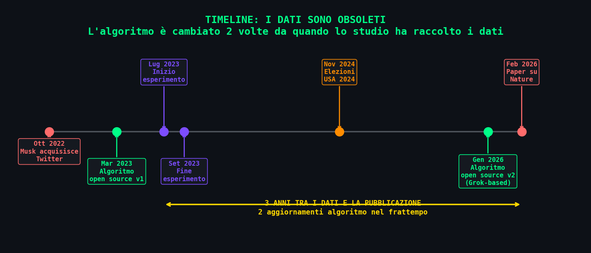
Nel frattempo l'algoritmo di X e' cambiato almeno due volte. La prima versione open source (marzo 2023) usava SimClusters, TwHIN, e un ranking neurale con feature engineering pesante. La versione attuale (gennaio 2026) ha eliminato tutto il feature engineering e usa un transformer Grok-based puro. Sono due sistemi completamente diversi.
Pubblicare nel 2026 uno studio basato sull'algoritmo del 2023 e' come fare il crash test di una Punto e dire che vale per la Model 3. Il motore e' cambiato. Il telaio e' cambiato. L'elettronica e' cambiata. Stai misurando un fantasma.
E la domanda ovvia: perche' tre anni? Un RCT su un panel di 5.000 utenti non richiede tre anni di analisi. La data di ricezione del paper e' dicembre 2024, accettato gennaio 2026. Al di la' delle ragioni del ritardo, la conseguenza concreta e' che la distanza temporale limita drasticamente la generalizzabilita' ai sistemi attuali. Non stai descrivendo l'algoritmo di X del 2026. Stai descrivendo un algoritmo che non esiste piu'.
// Il 99% Che Nessuno Vede
Sezione 12. La distribuzione dell'engagementLa distribuzione dell'engagement nei dati dello studio e' brutalmente skewed. La media dei likes e' 7.975. La mediana e' 166. Quarantotto volte di differenza. Significa che pochissimi post con milioni di interazioni distorcono tutte le medie.
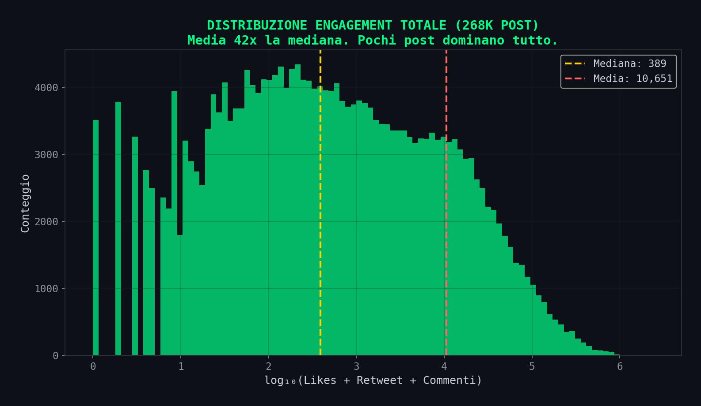
Quando lo studio dice "i conservatori hanno piu' engagement", parla di pochi post virali nella coda destra della distribuzione. Il 44% dei post conservatori ha piu' di 1.000 likes, contro il 38% dei liberali. Ma la differenza si concentra nella coda estrema.
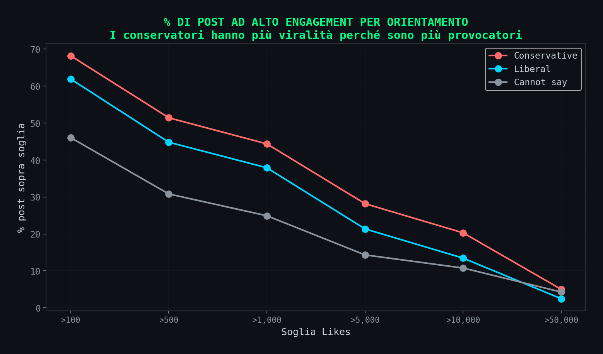
Questo e' un artefatto della natura del contenuto, non dell'algoritmo. Il contenuto provocatorio, polarizzante, emotivo genera code pesanti. I conservatori americani nel 2023 erano in piena campagna pre-elettorale, con Trump sotto indagine e la guerra in Ucraina come tema caldo. Qualsiasi contenuto su quei temi genera engagement alto. Non serve un algoritmo: serve un argomento che fa arrabbiare la gente.
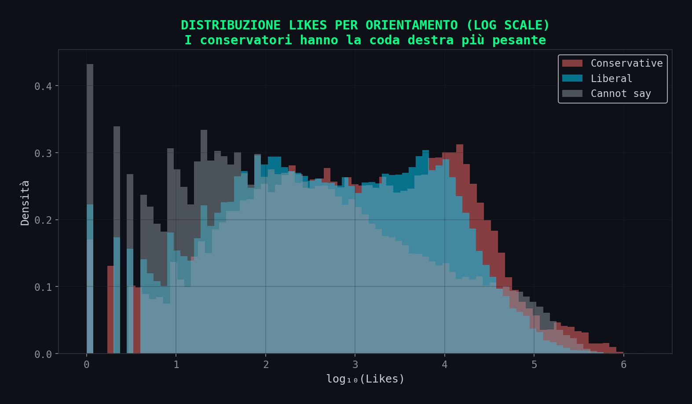
// Cosa C'e' Davvero Nel Feed
Sezione 13. La mappa completa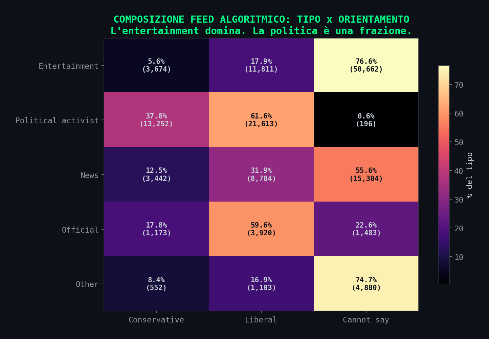
Nella heatmap si vede la struttura reale del feed algoritmico. Entertainment non politico: 35.7%. News cannot-say: 10.8%. Attivisti conservatori: 9.3%. Attivisti liberali: 15.3%. Il feed algoritmico mostra piu' attivisti liberali che conservatori. Lo studio non lo dice.
// 14.6% Non Ha Seguito Le Istruzioni
Sezione 14. La compliance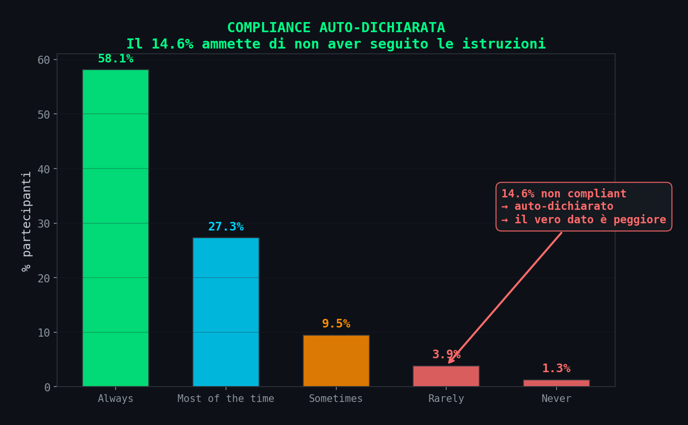
Il 14.6% dei partecipanti ammette di aver usato il feed sbagliato "sometimes", "rarely" o "never". E questo e' il dato auto-dichiarato: la gente tende a sovrastimare la propria compliance. Su un effetto di 0.11 SD, un 15% di contaminazione puo' generare o distruggere il risultato.
// Le Altre Crepe
Sezione 15. Problemi metodologici addizionaliFin qui abbiamo colpito i punti piu' visibili. Ma ci sono almeno quattro problemi metodologici che un reviewer attento avrebbe dovuto sollevare.
Multiple testing senza correzione
Lo studio testa 7 outcome principali, in 2 direzioni (algoritmo on e off), con 2 specifiche (con e senza controlli). Fanno 28 test solo nella Fig. 2. Aggiungendo il breakdown per partito (Extended Data Fig. 4) si arriva a 56. Con i test sugli account seguiti (Fig. 4) si superano i 120 test totali.
Il p-value principale e' 0.016. Con correzioni standard per test multipli (Bonferroni o FDR), la significativita' dell'effetto principale diventa fragile e potrebbe non reggere. Lo studio non applica nessuna correzione. Quando fai 28 test a soglia 0.05, per caso ne trovi almeno uno significativo con probabilita' del 76%.
L'effetto e' un LATE su un sottogruppo iper-selezionato
L'esperimento e' un RCT, ma la stima non e' un Average Treatment Effect sulla popolazione di X. Con il 6% di installazione della Chrome extension e il 14.6% di non-compliance, lo studio stima di fatto un Local Average Treatment Effect su un sottogruppo che ha accettato di partecipare a un panel retribuito, usa X da desktop, ha installato un'estensione del browser, e ha seguito le istruzioni. Generalizzare questo effetto a 500 milioni di utenti che scrollano distrattamente sul telefono mentre aspettano l'autobus e' un salto logico che i dati non supportano.
L'outcome e' self-report
Le "opinioni politiche" misurate nello studio non sono comportamenti osservati. Sono risposte a un sondaggio. Self-report. Con tutti i problemi noti: desiderabilita' sociale (rispondi quello che pensi sia "giusto"), risposta strategica (rispondi per segnalare appartenenza), instabilita' temporale (la tua risposta cambia con l'umore del giorno). Un effetto di 0.11 SD misurato su self-report dopo 7 settimane potrebbe riflettere un cambiamento di umore, non un cambiamento di opinione. Lo studio non ha nessun modo di distinguere tra i due.
Validita' ecologica compromessa
I partecipanti sanno di essere osservati. Usano il desktop invece del telefono (dove avviene la maggior parte dell'uso reale di X). Hanno un'estensione del browser che traccia il loro feed. Ricevono email di promemoria ogni 2-3 settimane. Vengono pagati per partecipare. Questo non e' "uso naturale di X". E' uso sotto osservazione in un contesto sperimentale. L'effetto Hawthorne (cambiare comportamento perche' ti senti osservato) e' un confondente classico, e qui ha tutte le condizioni per manifestarsi.
// Come E' Finito Su Nature
Sezione 16. Il peer reviewLa domanda che vi state facendo tutti: come ha fatto questo paper a passare il peer review di Nature?
Risposta breve: il peer review non fa quello che la gente pensa. I revisori controllano: (1) la metodologia e' formalmente corretta? Si', e' un RCT, randomizzazione fatta bene, survey pre/post, regressioni con covariate. (2) La statistica e' eseguita correttamente? Si', i CI sono calcolati bene, il codice gira. (3) Il topic e' rilevante? Caldissimo. Check.
Quello che il peer review non fa: verificare se l'effect size e' abbastanza grande per reggere le conclusioni qualitative. Verificare se classificare contenuto politico con un LLM da 8B introduce distorsioni. Verificare se i dati hanno ancora senso quando li pubblichi tre anni dopo e il sistema e' cambiato due volte.
Nature pubblica paper con effect size piccoli ogni settimana. Non e' un difetto del journal. E' un difetto di chi legge solo il titolo e il comunicato stampa.
// Riepilogo
Sezione 17. I numeri| Claim | Realta' (dai dati dello studio) |
|---|---|
| "Chiaramente orienta le opinioni" | 0.11 SD, effetto piccolo, non robusto: zero effetto sui Democratici |
| "L'algoritmo non e' neutrale" | Codice open source, zero classificazione politica, ottimizza engagement |
| "Sposta verso posizioni conservative" | Nessuna sovra-rappresentazione conservatrice nel feed (15.6% vs 16.2%) |
| "Amplificazione selettiva" | Amplificazione comportamentale, non manipolazione: rinforzo su orientamenti pre-esistenti |
| "Effetto sugli utenti" | Solo su Rep + Ind gia' orientati. Sui Dem tutti i p > 0.05. Non e' conversione. |
| "Indebolisce il dibattito democratico" | Variabile chiave (orientamento) con 20% di rumore. Umani unanimi al 59%. Alta incertezza. |
| "Sotto la guida di Musk" | Dati del 2023. Algoritmo cambiato 2 volte. Paper del 2026. Tre anni di ritardo. |
| "Serve il DSA" | Lo studio non menziona il DSA ne' suggerisce interventi regolatori |
Lo studio identifica un effetto statisticamente rilevabile, ma metodologicamente fragile e di interpretazione causale ambigua. I risultati sono compatibili sia con un effetto algoritmico debole sia con una spiegazione alternativa basata su engagement differenziale, errore di misura della variabile chiave e selezione del campione. Senza dati addizionali (testi originali, conteggio follower, validazione su modelli piu' robusti), non e' possibile distinguere tra queste ipotesi. Il salto da un effetto statistico piccolo, non robusto per sottogruppo e non corretto per test multipli a una conclusione qualitativa forte ("l'algoritmo orienta le opinioni politiche") non e' giustificato dai dati.
L'algoritmo non e' neutrale.
Ma neanche lo studio che lo accusa.
268.532 post · 20 grafici · dati originali dello studio · codice sorgente dell'algoritmo
Tutto replicabile. Zero opinioni.
github.com/pinperepette